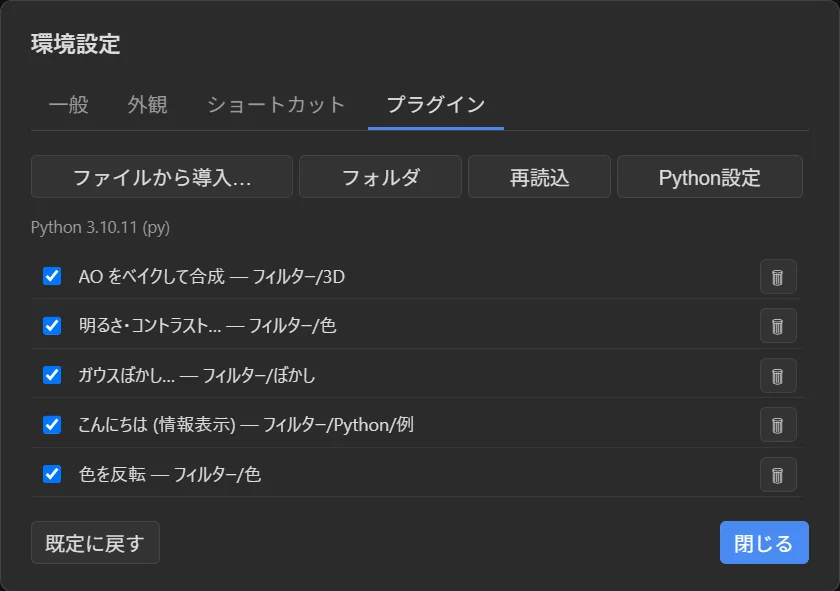

導入する

- Python 3 を入れます（python.org）。画像処理をするプラグインには
pip install numpyも必要です。 - 環境設定 ＞ プラグイン（Ctrl+,）で ファイルから導入… を押し、
.pyか.zipを選びます。 - フィルター メニューに項目が増えます。
ファイルを直接置く場合は %APPDATA%\PSD 3D Paint\plugins\（フィルター ＞ プラグインフォルダを開く）へ入れて 再読込。
Python が見つからないときは Python設定 で python.exe の場所を指定します。未設定なら py / python3 / python を自動で探します。
チェックを外すと一時的に無効にでき、自分で導入したものはゴミ箱ボタンで削除できます。
同梱プラグイン
アプリには次のプラグインが最初から入っています。作るときのお手本にもなります。
色を反転
invert.py — フィルター ＞ 色。numpy 不要。
明るさ・コントラスト…
brightness_contrast.py — フィルター ＞ 色。パラメータのダイアログ付き。
ガウスぼかし…
gaussian_blur.py — フィルター ＞ ぼかし。
AO をベイクして合成
bake_and_flatten.py — フィルター ＞ 3D。AO を焼いて乗算で重ねます。
こんにちは（情報表示）
hello_world.py — フィルター ＞ Python ＞ 例。いちばん小さい例。

いちばん小さい例
import psdpaint
def run():
d = psdpaint.doc()
psdpaint.message(f"こんにちは。キャンバスは {d['width']}x{d['height']} です")
psdpaint.register("hello", "こんにちは", run, menu="フィルター/Python/例")
psdpaint.run()register(...)でメニュー項目を宣言し、- 最後に 必ず
psdpaint.run()を呼びます（ここからアプリとの通信が始まります）。
ひな形は plugin-template.py からダウンロードできます。コピーして書き換えるのがいちばん早いです。
register()
psdpaint.register(proc, label, func, menu="フィルター/Python", params=None, help="")| 引数 | 意味 |
|---|---|
proc | プラグイン内で一意な ID（例 "my_blur"） |
label | メニューに出る名前 |
func | 引数なしの関数。メニューで選ばれると呼ばれます |
menu | / 区切りのメニューの場所。"フィルター/色"、"フィルター/Python/自作" など |
params | パラメータの宣言（下記）。無ければ確認なしで即実行 |
help | ダイアログに出す補足 |
1 つの .py で register() を何回でも呼べます（複数のメニュー項目を持つプラグイン）。
パラメータ
params を書くと、実行前にアプリが自動でダイアログを出します。値は psdpaint.param(name, default) で受け取ります。
params=[
{"name": "amount", "label": "強さ", "type": "int", "default": 50, "min": 0, "max": 100},
{"name": "soft", "label": "やわらかく", "type": "bool", "default": True},
{"name": "mode", "label": "モード", "type": "choice", "default": "A", "choices": ["A", "B", "C"]},
{"name": "tint", "label": "色", "type": "color", "default": "#ffffff"},
]type は int / float / bool / string / color（#rrggbb）/ choice（choices を併記）。
API リファレンス（psdpaint）
ドキュメントとレイヤー
| 関数 | 説明 |
|---|---|
doc() | {width, height, layerCount, activeIndex, normalWidth, normalHeight} |
layers() | [{id, name, index, opacity, visible, blendMode}, ...]（下から上） |
active_layer() | アクティブなレイヤーの情報 |
new_layer(name="Python", above=True) | 新しいレイヤーを作り {id, index} を返す |
delete_layer(layer) | レイヤーを削除 |
set_layer(layer, **props) | name / opacity（0〜1）/ visible / blendMode を変更 |
fill(layer, r, g, b, a=255) | 単色で塗る |
layer には "active" / "composite" / "normal_map" / "normal_height" / レイヤーの id を渡せます。
blendMode: normal, multiply, screen, overlay, darken, lighten, color-dodge, color-burn, hard-light, soft-light, difference, exclusion, hue, saturation, color, luminosity
画素の読み書き
img = psdpaint.get_image("active") # psdpaint.Image（RGBA8）
arr = img.to_numpy() # (H, W, 4) uint8 ※numpy が必要
# ... arr を加工 ...
psdpaint.set_image("active", psdpaint.Image.from_numpy(arr))Image.dataはwidth*height*4バイトのbytearray。numpy なしでも直接いじれます。from_numpyはグレー（2D）・RGB・RGBA を受け付け、RGBA にそろえます。set_imageの変更は、アプリ側で 1 手として 取り消せます。サイズはキャンバスと同じにしてください。
ベイク
res = psdpaint.bake("ao") # "ao" | "light" | "objnormal"
psdpaint.set_layer(res["layerId"], opacity=0.6, blendMode="multiply")表示とパラメータ
| 関数 | 説明 |
|---|---|
message(text) | ステータスバーに 1 行表示 |
progress(frac, text="") | 進み具合（0.0〜1.0） |
log(*args) / print(...) | Python コンソールパネルに出力 |
param(name, default) | ダイアログで選ばれた値 |
実例: 明るさ・コントラスト
"""明るさ / コントラストをアクティブレイヤーに適用（numpy が必要）"""
import psdpaint
def run():
import numpy as np
bright = psdpaint.param("brightness", 0) # -100..100
contrast = psdpaint.param("contrast", 0)
img = psdpaint.get_image("active")
a = img.to_numpy().astype(np.float32)
rgb = a[:, :, :3]
rgb += bright * 1.5
c = (contrast + 100) / 100.0
rgb = (rgb - 128.0) * c + 128.0
a[:, :, :3] = np.clip(rgb, 0, 255)
psdpaint.set_image("active", psdpaint.Image.from_numpy(a))
psdpaint.message("明るさ / コントラストを適用")
psdpaint.register(
"brightness_contrast", "明るさ・コントラスト…", run,
menu="フィルター/色",
params=[
{"name": "brightness", "label": "明るさ", "type": "int", "default": 0, "min": -100, "max": 100},
{"name": "contrast", "label": "コントラスト", "type": "int", "default": 0, "min": -100, "max": 100},
],
)
psdpaint.run()テストとデバッグ
.pyを%APPDATA%\PSD 3D Paint\plugins\に置きます（フィルター ＞ プラグインフォルダを開く）。- 環境設定 ＞ プラグイン ＞ 再読込（または フィルター ＞ プラグインを再読み込み）。
- フィルターメニューから実行します。エラーは Python コンソール パネルにトレース付きで出ます。
print()もここに出ます。
progress() を呼んでください。アプリは結果を待っている間、操作を受け付けません。しくみ
アプリはプラグインを 2 通りに起動します。
- 登録（
PSDPAINT_MODE=register）:psdpaint.run()が登録内容を JSON で 1 行返してすぐ終了。アプリはこれでメニューを作ります。 - 実行（
PSDPAINT_MODE=execute,PSDPAINT_PROC=<proc>）: メニューで選ばれたときに起動。get_imageなどは改行区切りの JSON-RPC でアプリに問い合わせます。
stdout は通信専用に複製されているので、print() を使っても通信は壊れません。import psdpaint は常に通ります。
制限（現時点）
- できるのは、画像レイヤーと法線の高さバッファの読み書き、ベイクまでです。
- 3D モデルのボーン・アニメーション・カメラ・マテリアルにはまだアクセスできません。
- スクリプト言語は Python のみです。
詳しい資料: PLUGINS.md（作り方） / plugins/README.md（API 一覧）